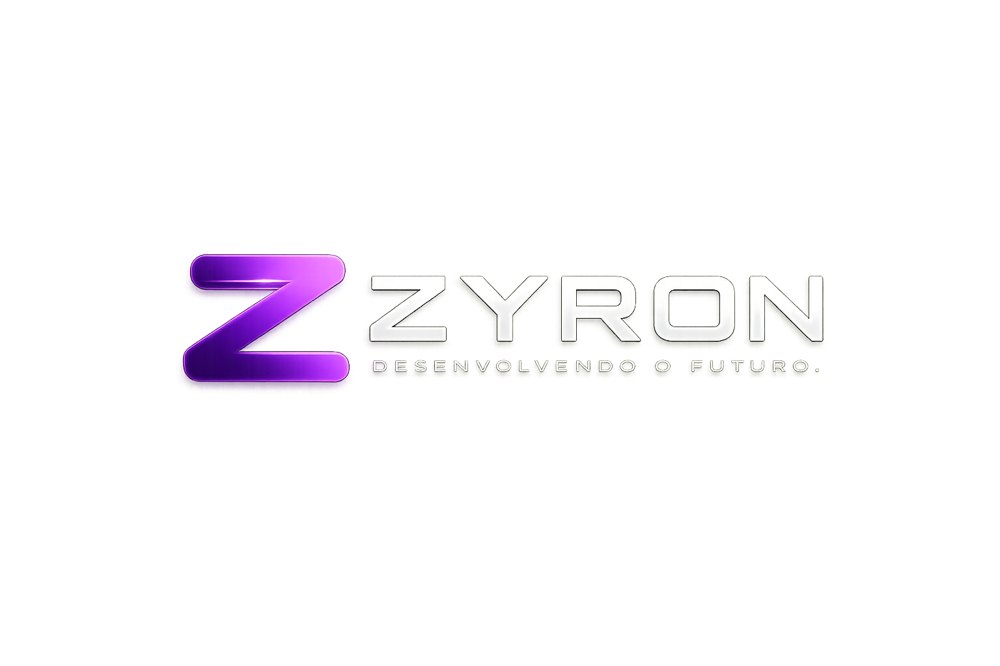
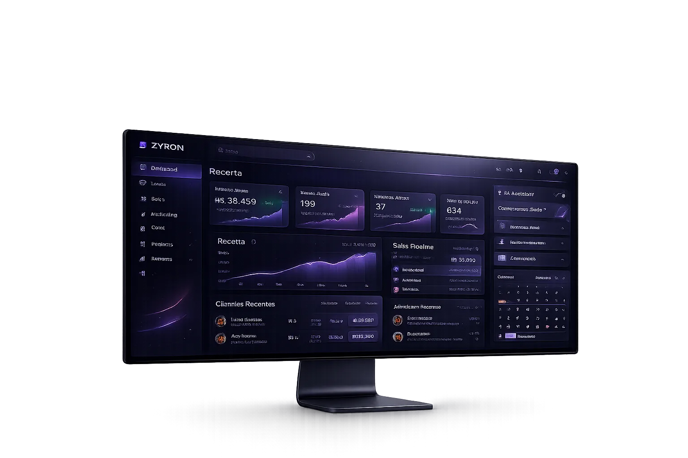
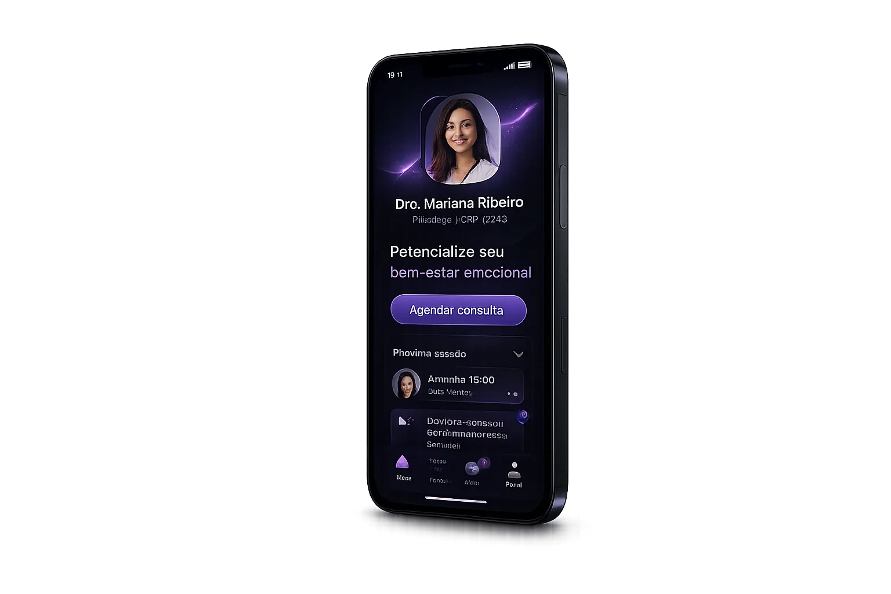
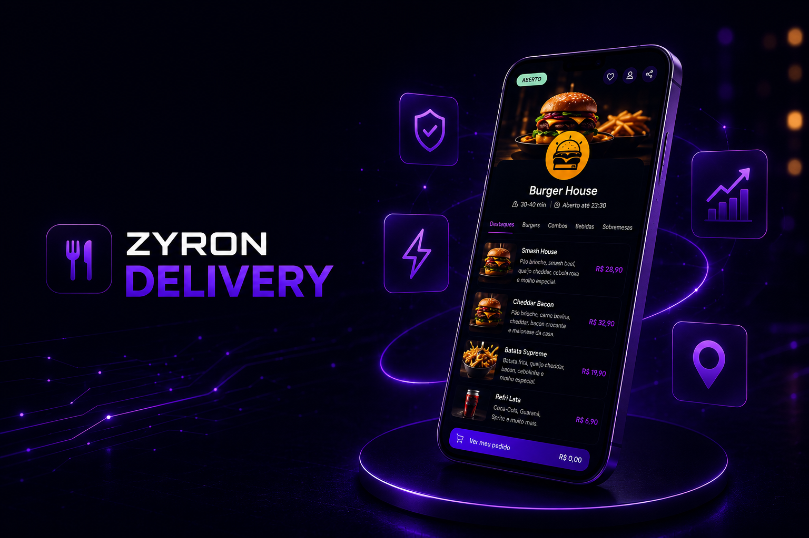
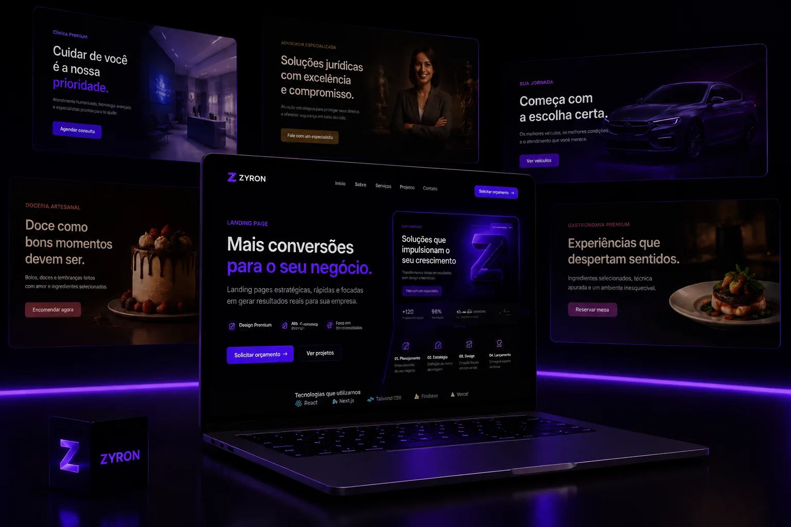
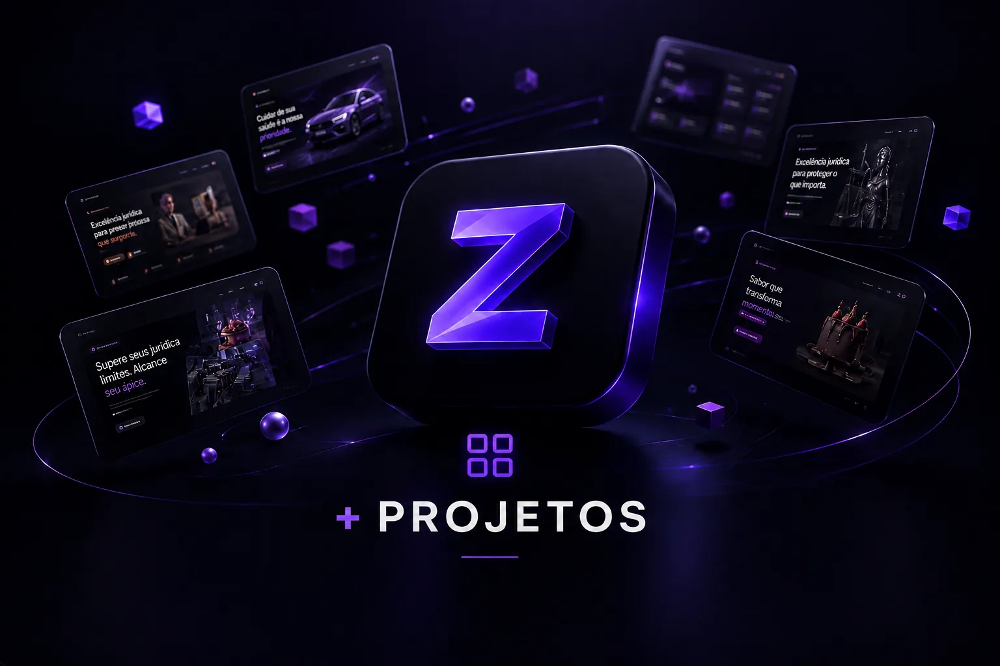
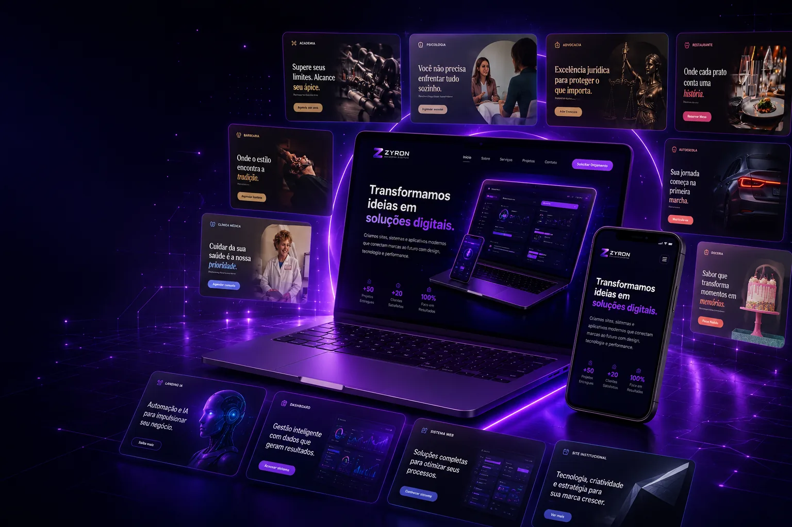

Desenvolvimento moderno
Criamos sites, landing pages e sistemas rápidos, modernos e preparados para evoluir com o seu negócio.

Criamos sites, sistemas, automações e produtos digitais para empresas que querem vender melhor, organizar sua operação e crescer com tecnologia.


Na ZYRON, unimos estratégia, design e tecnologia para criar sites, sistemas e experiências digitais que fortalecem marcas, aumentam a credibilidade e ajudam empresas a conquistar mais clientes.
Criamos sites, landing pages e sistemas rápidos, modernos e preparados para evoluir com o seu negócio.
Interfaces bonitas, intuitivas e focadas na melhor experiência do usuário.
Em parceria com a Mesh Conect, unimos desenvolvimento e marketing digital para criar soluções que geram resultados reais.
A ZYRON desenvolve soluções digitais modernas para empresas que desejam fortalecer sua presença online, transmitir credibilidade e crescer através da tecnologia.
Sites institucionais e Landing Pages profissionais para apresentar sua empresa, fortalecer a marca e gerar novas oportunidades.
Sistemas web, aplicativos e produtos digitais para organizar processos, atender clientes e dar mais controle à operação.
Integrações e automações para ganhar eficiência, com estratégias de marketing desenvolvidas em parceria com a Mesh Conect.
Criamos experiências digitais completas, unindo tecnologia, design e estratégias de marketing para gerar resultados reais.
Sites rápidos, leves e otimizados para oferecer a melhor experiência e aumentar suas chances de conversão.
Utilizamos tecnologias modernas e estratégias atualizadas para criar soluções preparadas para o futuro.
Cada projeto nasce com um objetivo claro: fortalecer sua marca, atrair clientes e gerar resultados reais.
ZYRON e Mesh Conect unem desenvolvimento e marketing digital para entregar uma solução completa, do projeto ao crescimento da sua empresa.
Produtos próprios, páginas comerciais e serviços integrados para diferentes momentos do seu negócio.

Cardápio digital, pedidos online e gestão completa para negócios de alimentação.

Páginas comerciais criadas para apresentar ofertas e transformar visitantes em oportunidades.

Conheça o ZYRON Delivery, sistemas de gestão e soluções prontas para adaptar ao seu negócio.
Transforme sua ideia em um site, sistema ou landing page que gera resultados e acompanha o crescimento do seu negócio.
Iniciar projeto